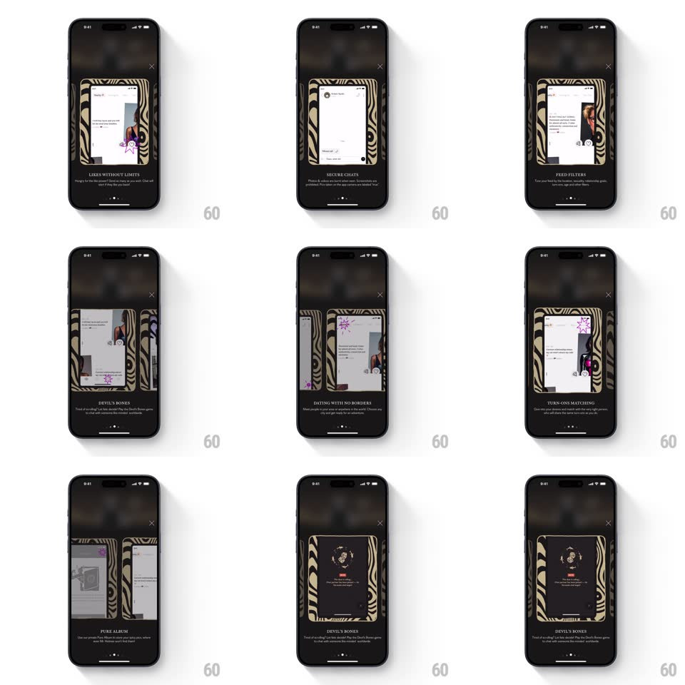

Media
Frame-by-frame

Rebuild this interaction 1:1: Pure's value-prop carousel - on the dark paywall sheet (WEEK plan, "GET PURE FOR A WEEK" CTA), horizontally swiping cycles through zebra-bordered value cards ("LIKES WITHOUT LIMITS", "DATING WITH NO BORDERS", "DEVIL'S BONES", "TURN-ONS MATCHING", "SECURE CHATS") with parallax between cards and an animated illustration in each.

Rebuild this interaction 1:1: Pure's value-prop carousel - on the dark paywall sheet (WEEK plan, "GET PURE FOR A WEEK" CTA), horizontally swiping cycles through zebra-bordered value cards ("LIKES WITHOUT LIMITS", "DATING WITH NO BORDERS", "DEVIL'S BONES", "TURN-ONS MATCHING", "SECURE CHATS") with parallax between cards and an animated illustration in each.
## Integration
Integration: stack-agnostic spec - springs given as stiffness/damping, timed motions as duration + curve; map every value to your framework and animation library of choice.
## Scene
A near-black sheet over the dimmed app: X close top-right, the carousel center-stage (tall cards with black-and-gold zebra-print borders, an animated illustration window, bold serif title, two-line description), page dots beneath, and the WEEK price card with the CTA button at top/bottom.
## Motion spec
Pattern: swipe carousel with layered parallax + in-card animation.
- Swipe: the outgoing card slides left and rotates slightly (rotateZ -4deg, scale 0.92) as the incoming card slides in from the right at full scale (300ms, ease-out) - adjacent cards peek at the edges throughout.
- During the swipe, the card layers parallax: the zebra frame moves at 1x, the illustration window at 0.7x, the title at 0.85x - depth inside each card.
- Each card's illustration runs its own loop: chat bubbles pop, dice tumble, a profile card swipes - small 2-3s loops unique to the value prop.
- The page dots slide a fill indicator between positions (200ms).
- Release mid-swipe under threshold: the current card springs back to center (spring ~350/22).
## Calibration
- Card transitions are snappy (300ms) - a deck feel, not a slow pager.
- The zebra border is static texture; the motion lives in the illustration window and the card-level parallax.
## Reduced motion
Cards crossfade; illustrations static.
## Don't miss
- The DEVIL'S BONES card shows real tumbling dice - 3D rotation with gravity.
- The carousel sits between the price header and the CTA - the sheet never scrolls, only the cards move.